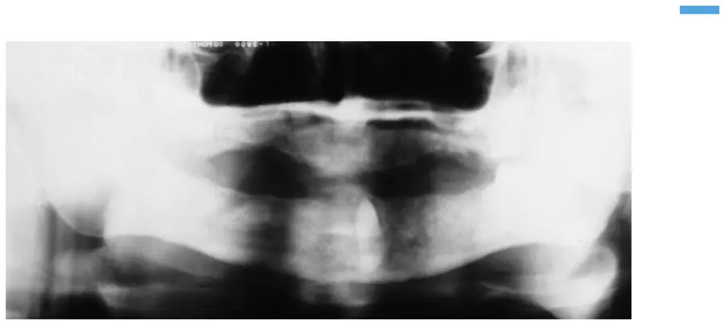
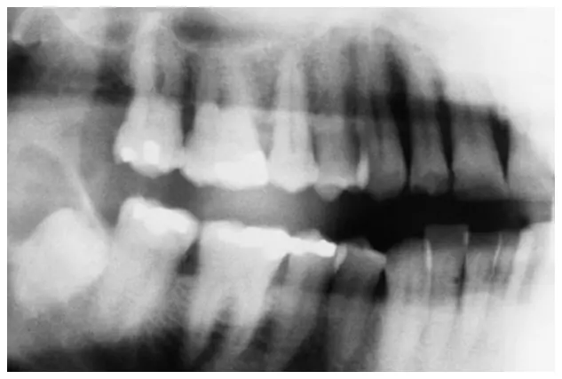

نسخه استخراجشده؛ ترجمه یا تأیید علمی انجام نشده است. وضعیت: captured
تحلیل ریشه. گاهی دندان نهفته فشار کافی بر ریشهی دندان مجاور وارد میکند و تحلیل خارجی ریشه ایجاد میکند. فرایندش خوب شناخته نشده، ولی به نظر میرسد شبیه تحلیلی است که دندانهای شیری در جریان رویش دندان جانشین متحمل میشوند. برداشتن دندان نهفته ممکن است دندان مجاور را با ترمیم سمانی نجات دهد؛ گاهی هم درمان اندو برای حفظشان لازم میشود.

دندان نهفته زیر پروتز — چهار دلیل برای برداشتن پیش از ساخت پروتز:
کیست و تومور ادنتوژنیک. وقتی دندان نهفته کاملاً داخل زائدهی آلوئولار است، ساک فولیکولار همراهش هم اغلب باقی میماند. در بیشتر بیماران فولیکول اندازهی اولیهاش را حفظ میکند، ولی ممکن است دژنراسیون کیستیک پیدا کند و به کیست دنتیژور تبدیل شود.
عدد تشخیصی: اگر فضای فولیکولار اطراف تاج دندان بیش از ۳ میلیمتر باشد، تشخیص پیش از عمل کیست دنتیژور معقول است. با پایش نزدیک، کیست را میشود پیش از بزرگ شدن تشخیص داد؛ کیستهای پایشنشده میتوانند به اندازههای عظیم برسند.
و تومور: همانطور که کیست ادنتوژنیک میتواند اطراف دندان نهفته شکل بگیرد، تومور ادنتوژنیک هم میتواند از اپیتلیوم درون فولیکول دندانی پدید آید. شایعترین تومور ادنتوژنیک این ناحیه آملوبلاستوما است، که معمولاً باید تهاجمی درمان شود: برداشتن بافت نرم رویی و دستکم بخشی از مندیبل. هرچند بروز کلی کیست و تومور اطراف نهفتهها بالا نیست، اکثریت قاطع شرایط پاتولوژیک مولر سوم مندیبل با دندانهای رویشنیافته همراه است.
درد با منشأ نامشخص. گاهی بیمار از درد ناحیهی رترومولار مندیبل شکایت میکند بدون علت آشکار. اگر شرایطی مثل اختلال درد میوفاشیال رد شده باشند و بیمار دندان رویشنیافته داشته باشد، برداشتن دندان گاهی درد را برطرف میکند. بهعلاوه، به تعویق انداختن برداشتن مولر سوم به سنین بالاتر ممکن است احتمال اختلالات گیجگاهی-فکی را بیشتر کند.

پیشگیری از شکستگی فک. مولر سوم نهفته در مندیبل فضایی را اشغال میکند که معمولاً با استخوان پر است. این مندیبل را ضعیف و فک را مستعد شکستگی در محل دندان نهفته میکند. و اگر فک از ناحیهی مولر سوم نهفته بشکند، مولر سوم نهفته اغلب پیش از جااندازی و فیکساسیون شکستگی برداشته میشود.
تسهیل درمان ارتودنسی. وقتی بیمار به عقب بردن مولرهای اول و دوم با تکنیک ارتودنتیک نیاز دارد، حضور مولر سوم نهفته میتواند در درمان اختلال ایجاد کند؛ پس توصیه میشود مولرهای سوم نهفته پیش از شروع درمان ارتودنسی برداشته شوند. و اگر برای انکوریج دیستال قرار است ایمپلنت رترومولار گذاشته شود، برداشتن مولر سوم نهفتهی پایین لازم است.
التیام پریودنتال بهینه. دو پارامتر اصلی سلامت پریودنتال پس از جراحی مولر سوم: ۱) ارتفاع استخوان و ۲) سطح اتصال پریودنتال در سطح دیستال مولر دوم.
دو عامل مهمترِ تعیینکنندهی التیام مطلوب: ۱) وسعت نقص اینفرابونیِ پیش از عمل در سطح دیستال مولر دوم — اگر مقدار زیادی استخوان دیستال به دلیل حضور دندان نهفته و فولیکولش از بین رفته باشد، احتمال کم شدن پاکت اینفرابونی کمتر است، ۲) سن بیمار در زمان جراحی — هرچه بیمار مسنتر، احتمال التیام استخوانی مطلوب کمتر.
عدد سنی: بیمارانی که مولر سومشان پیش از ۲۵ سالگی برداشته میشود، وضعیت بهتری نسبت به برداشتن پس از ۲۵ سالگی دارند — در بیمار جوانتر نهفقط التیام اولیهی پریودنتال بهتر است، بلکه بازسازی بلندمدت و ادامهدار پریودنشیوم هم بهروشنی بهتر است.
و چرا رویش دیرهنگام به ضرر پریودنشیوم است: چون دندان رویشنیافته ممکن است تا ۲۵ سالگی به رویش ادامه دهد و بخش پایانی فرایند رویش بهکندی رخ میدهد، هم احتمال پریکرونیت بالا میرود و هم میزان تماس میان مولر سوم و مولر دوم بیشتر میشود — و هر دو امکان التیام پریودنتال مطلوب را کم میکنند.
و یک استثنای مهم که جهت توصیه را برعکس میکند: مولر سوم نهفتهی کاملاً استخوانی و بدون علامت در بیمار بالای ۳۰ سال احتمالاً باید سر جایش بماند، مگر شرایط پاتولوژیک مشخصی ایجاد شود. برداشتن چنین دندانی در بیمار مسنتر بهروشنی عمق پاکت و از دست رفتن استخوان آلوئولار بیشتری از باقی گذاشتنش به بار میآورد.